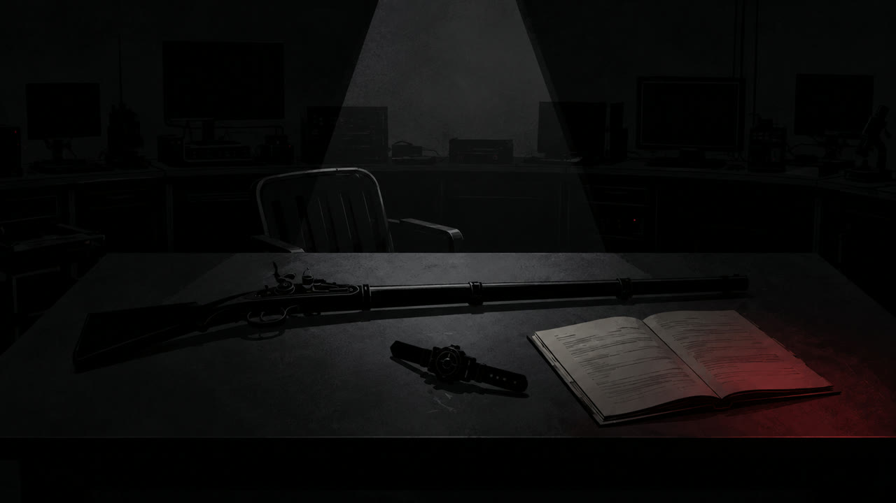

Ending A-1
Ending A-1
블랙은 곁에 세워 둔 머스킷을 테이블에 눕혔다. 손목에서 변신 장치도 풀어 그 옆에 놓았다.
“레드를 죽인 건 나다.”
블랙은 카오스 구역에서 레드를 본 뒤 그를 배신자로 판단했다고 말했다. 비밀 통로로 연구소를 드나드는 모습을 보고도 같은 결론을 내렸다.
그는 사진을 태워 위기감지 알림을 울린 뒤, 잠금이 풀린 레드의 방에 들어가 소화기로 레드를 죽였다고 인정했다.
테이블 위에는 조사 중 블랙의 소지품에서 발견된 그을린 그림이 놓여 있었다. 그림을 그린 아이는 조금 전 부모와 다시 만난 아이였다.
“레드는 그 아이의 부모를 찾고 있었다. 나는 그 이유를 확인하지 않았다. 내가 틀렸다.”

박사는 머스킷과 변신 장치를 거두고 장치의 기능을 멈췄다. 블랙은 박사가 장비를 회수하는 동안 가만히 서 있었다.
박사는 블랙의 자백을 기록했다. 블루와 옐로, 핑크는 앞으로 블랙에게 어떤 일을 맡길지 의논하기 위해 옆방으로 갔다.